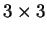
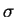
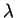
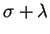
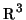
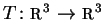

1) Decida se cada afirmação a seguir é verdadeira ou falsa e marque com caneta sua resposta no quadro abaixo. Atenção: responda todos os itens, use "N = não sei" caso você não saiba a resposta. Cada resposta certa vale 0.3, cada resposta errada vale -0.2, cada resposta N vale 0. Respostas confusas e ou rasuradas valerão -0.2.
1.a) Seja A uma matriz simétrica inversível. Então sua inversa também é simétrica.
1.b) A multiplicação de duas matrizes simétricas é uma matriz simétrica.
1.c) Sejam A uma matriz  e D uma matriz diagonal tais que A=P D P-1 (onde P é uma matriz inversível). Então A é simétrica.
1.d) Seja A uma matriz diagonalizável. Suponha que B=P A P-1 (onde P é uma matriz inversível). Então B é diagonalizável.
1.e) Sejam A uma matriz e  e  autovalores de A. Então  é um autovalor de A.
1.f)
Seja R uma rotação de

de ângulo
 e eixo de rotação a reta r que contém a
origem. Então, para todo vetor não nulo u de
,
se verifica que o ângulo entre u e R(u) é
e eixo de rotação a reta r que contém a
origem. Então, para todo vetor não nulo u de
,
se verifica que o ângulo entre u e R(u) é  .
.
1.g)
Seja A uma matriz ortogonal .
Então o determinante
de A é  .
.
1.h) Seja A uma matriz diagonalizável. Então A3 também é diagonalizável.
1.i)
Seja A uma matriz  ortogonal e simétrica. Então
A é a identidade ou representa um espelhamento.
ortogonal e simétrica. Então
A é a identidade ou representa um espelhamento.
2)
Considere a matriz
Considere agora a matriz B
3)
Considere a transformação linear
tal que
4)
Determine quais das matrizes a seguir são diagonalizáveis.
Nos caso afirmativos encontre uma base de autovetores e uma forma
diagonal das matrizes.